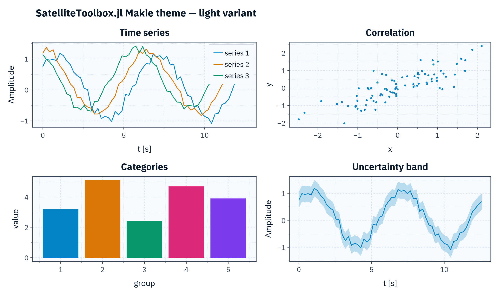
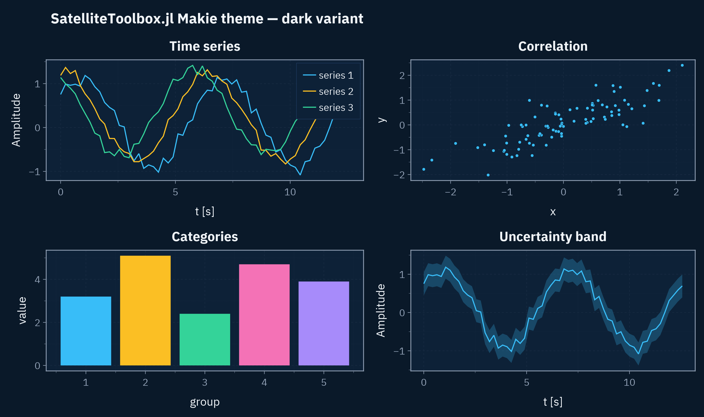
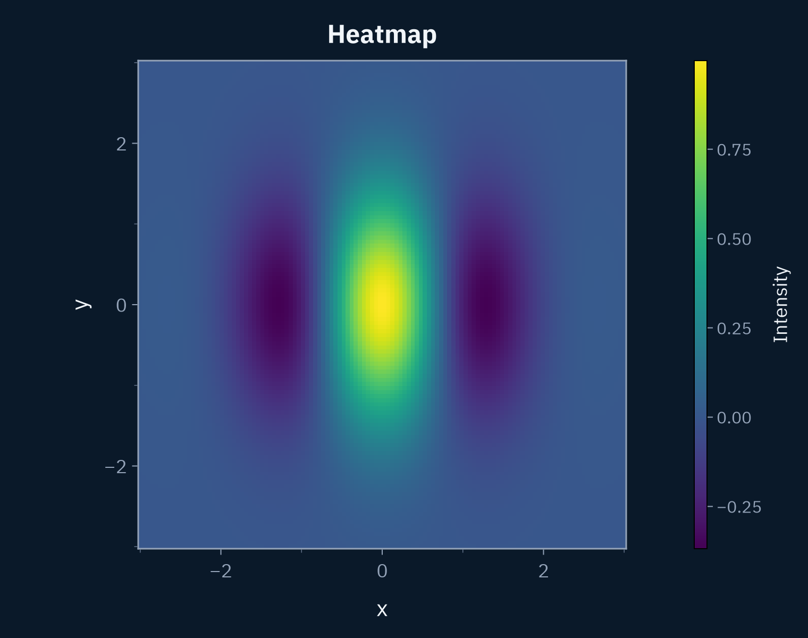
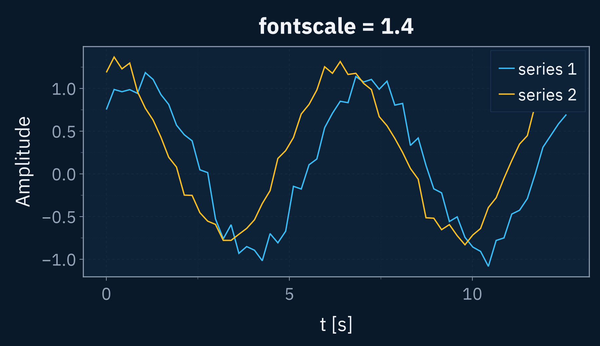
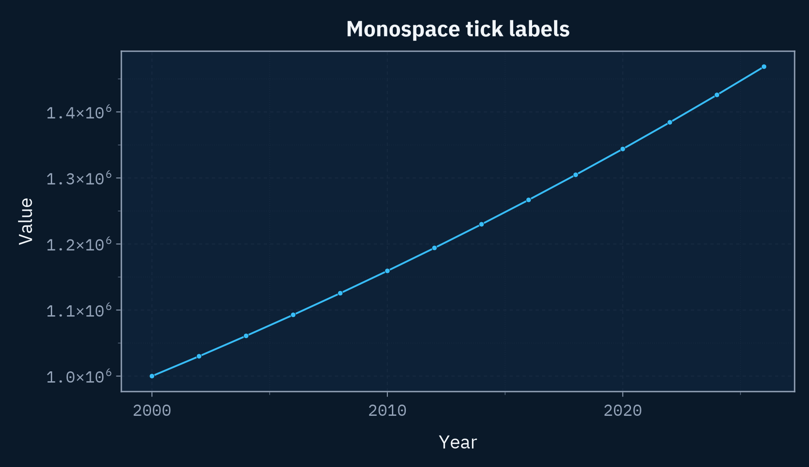
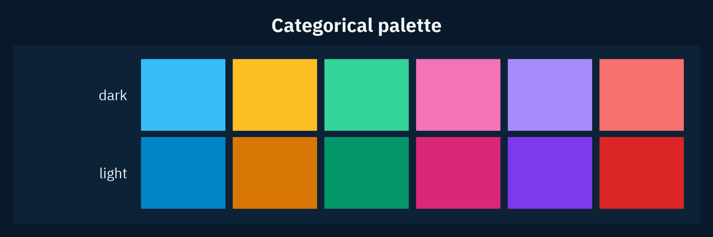

Makie Theme
SatelliteToolbox.jl provides a Makie theme with coordinated dark and light variants, designed for presentation slides and reports. The theme is implemented as a package extension. Hence, it becomes available when a Makie backend is loaded together with SatelliteToolbox.jl:
using CairoMakie # Or GLMakie, WGLMakie, etc.
using SatelliteToolboxTwo functions compose the API (see the Library page for the complete documentation):
makie_theme: return the theme, ready forset_theme!orwith_theme.makie_palette: return the firstncolors of the categorical palette.
Quick Start
Apply the theme globally with set_theme! or locally with with_theme:
set_theme!(makie_theme()) # Light variant (default).
set_theme!(makie_theme(:dark)) # Dark variant.
with_theme(makie_theme(:dark)) do
scatter(rand(100))
endThe recommended figure size for 16:9 slides is Figure(size = (1280, 720)), and the recommended export resolution is save("plot.png", fig; px_per_unit = 2).
The following examples use deterministic sample data:
using CairoMakie
using Random
using SatelliteToolbox
function line_data(; n = 60, nseries = 3, seed = 1)
rng = MersenneTwister(seed)
x = range(0, 4π; length = n)
ys = [sin.(x .+ 0.7i) .+ 0.12i .+ 0.08 .* randn(rng, n) for i in 1:nseries]
return x, ys
end
function scatter_data(; n = 90, seed = 7)
rng = MersenneTwister(seed)
x = randn(rng, n)
y = 0.8 .* x .+ 0.5 .* randn(rng, n)
return x, y
end
bar_data() = (1:5, [3.2, 5.1, 2.4, 4.7, 3.9])
function heatmap_data(; n = 120)
x = range(-3, 3; length = n)
y = range(-3, 3; length = n)
z = [exp(-(xi^2 + yi^2) / 2) * cos(2xi) for xi in x, yi in y]
return x, y, z
end
# Multi-panel overview showcasing lines, scatter, bars, and an uncertainty band. `dark`
# selects the matching categorical palette for the elements whose color is set explicitly.
function overview_figure(; dark::Bool)
x, ys = line_data()
sx, sy = scatter_data()
bx, by = bar_data()
pal = makie_palette(6; dark = dark)
fig = Figure(size = (1280, 760))
Label(
fig[0, :],
"SatelliteToolbox.jl Makie theme — $(dark ? "dark" : "light") variant";
fontsize = 26,
font = :bold,
halign = :left,
padding = (8, 0, 0, 0),
)
ax1 = Axis(fig[1, 1]; title = "Time series", xlabel = "t [s]", ylabel = "Amplitude")
for (i, y) in enumerate(ys)
lines!(ax1, x, y; label = "series $i")
end
axislegend(ax1; position = :rt)
ax2 = Axis(fig[1, 2]; title = "Correlation", xlabel = "x", ylabel = "y")
scatter!(ax2, sx, sy)
ax3 = Axis(fig[2, 1]; title = "Categories", xlabel = "group", ylabel = "value")
barplot!(ax3, bx, by; color = pal[1:length(bx)])
ax4 = Axis(fig[2, 2]; title = "Uncertainty band", xlabel = "t [s]", ylabel = "Amplitude")
band!(ax4, x, ys[1] .- 0.3, ys[1] .+ 0.3; color = (pal[1], 0.25))
lines!(ax4, x, ys[1]; color = pal[1])
return fig
endLight Variant
with_theme(makie_theme()) do
overview_figure(dark = false)
end
Dark Variant
with_theme(makie_theme(:dark)) do
overview_figure(dark = true)
end
Heatmap and Colorbar
with_theme(makie_theme(:dark)) do
x, y, z = heatmap_data()
fig = Figure(size = (760, 600))
ax = Axis(fig[1, 1]; title = "Heatmap", xlabel = "x", ylabel = "y", aspect = 1)
hm = heatmap!(ax, x, y, z)
Colorbar(fig[1, 2], hm; label = "Intensity")
fig
end
Options
Font Scale
The keyword fontscale uniformly scales every font size (tick labels, axis labels, titles, legends, etc.). It is useful when a figure is shrunk into a small slide area:
with_theme(makie_theme(:dark; fontscale = 1.4)) do
x, ys = line_data(; nseries = 2)
fig = Figure(size = (900, 520))
ax = Axis(
fig[1, 1];
title = "fontscale = 1.4",
xlabel = "t [s]",
ylabel = "Amplitude",
)
for (i, y) in enumerate(ys)
lines!(ax, x, y; label = "series $i")
end
axislegend(ax; position = :rt)
fig
end
Monospaced Tick Labels
The keyword mono_ticklabels renders the axis and colorbar tick labels using IBM Plex Mono. The fixed-width digits keep numeric ticks vertically aligned, which is useful for plots dominated by numbers:
with_theme(makie_theme(:dark; mono_ticklabels = true)) do
years = 2000:2:2026
values = 1.0e6 .* (1.03) .^ (0:(length(years) - 1))
fig = Figure(size = (900, 520))
ax = Axis(
fig[1, 1];
title = "Monospace tick labels",
xlabel = "Year",
ylabel = "Value",
)
lines!(ax, years, values)
scatter!(ax, years, values)
fig
end
Palette
The function makie_palette returns the first n colors of the 6-color categorical palette, matching the theme variant selected by the keyword dark:
with_theme(makie_theme(:dark)) do
dark = makie_palette(6; dark = true)
light = makie_palette(6)
fig = Figure(size = (900, 300))
ax = Axis(fig[1, 1]; title = "Categorical palette")
for (row, (name, pal)) in enumerate(("dark" => dark, "light" => light))
y = 2 - row # Dark on the top row, light on the bottom.
for (i, c) in enumerate(pal)
poly!(ax, Rect(i - 1, y, 0.92, 0.92); color = c)
end
text!(ax, -0.15, y + 0.46; text = name, align = (:right, :center))
end
limits!(ax, -1.4, 6.1, -0.2, 2.1)
hidedecorations!(ax)
hidespines!(ax)
fig
end
Fonts
The theme bundles the following fonts in assets/fonts/, so text renders identically regardless of which fonts are installed on the host system:
| File | Usage |
|---|---|
IBMPlexSans-Regular.ttf | Body text, tick labels, and axis labels. |
IBMPlexSans-Bold.ttf | Titles and legend titles. |
IBMPlexSans-Italic.ttf | Italic text. |
IBMPlexSans-BoldItalic.ttf | Bold italic text. |
IBMPlexMono-Regular.ttf | Tick labels when mono_ticklabels = true. |
IBM Plex Sans and IBM Plex Mono are copyright © IBM Corp. and are distributed under the SIL Open Font License 1.1. The license texts are available alongside the font files.